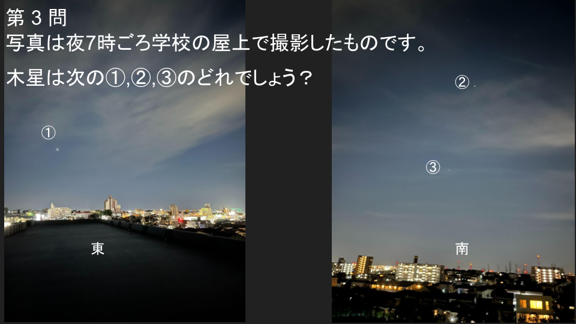
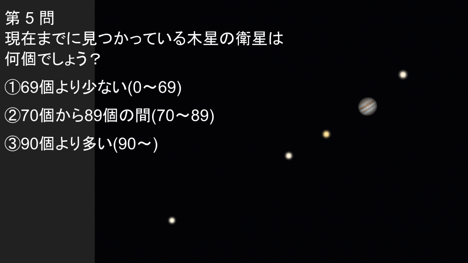
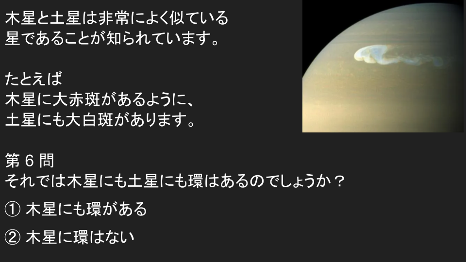
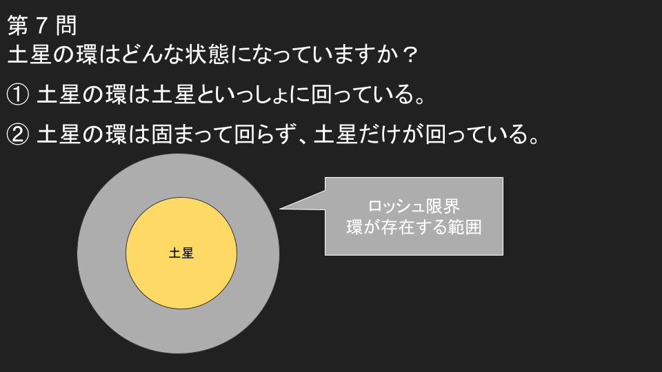
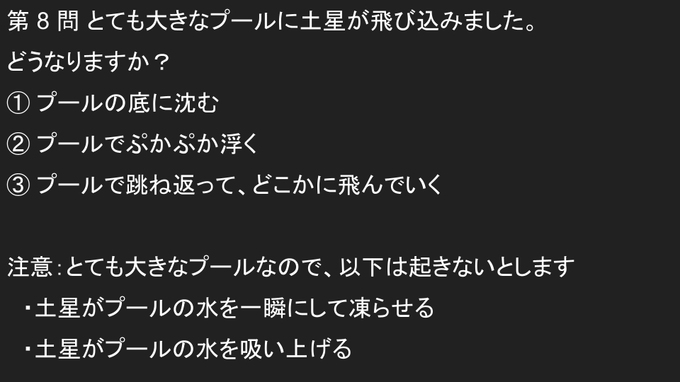

星空クイズ



木星・土星クイズ






発表してみた感想
・初めて自分で発表内容を全部準備できた。・初めて本格的な説明がある発表に挑戦できた。
・説明のため自分で絵を描いたり、調べたりすることも多く大変だったが、達成感が大きかった。
・発表に司会を通じて、みんなが発表したい話題を共有できた。
・プラネタリウムの説明を通じて、投影方法・機構などへの関心が高まった。
・みんなで発表の練習しながら、発表内容を改善できた。
・秋の夕方に見える明るい星がどのように見えるか実際に見たり、発表したりして理解が深まった
・観望会は雲が多かったが、木星と土星が見えて良かった(反射望遠鏡 130mm, f=800mm; 屈折望遠鏡 80mm, f=1200mm)。
あとがき
星空クイズの問題は中学校では季節の星座の見え方として勉強します。
ガリレオ衛星の観測は高校で学習する「万有引力の法則」(=地動説の確立)につながる重大な発見です。
土星の成分の多くは密度 1 g/cm^3 未満の「個体(金属)化した水素」のため、水に浮くと考えられます。
この時期の木星は地球に近く見やすい時期でした
関連ページ：衝を迎える木星が見頃（2023年11月）戻る